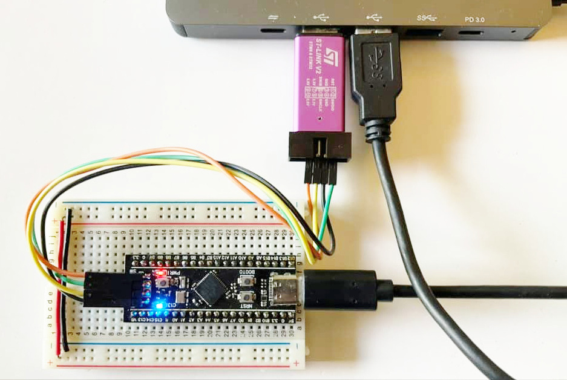
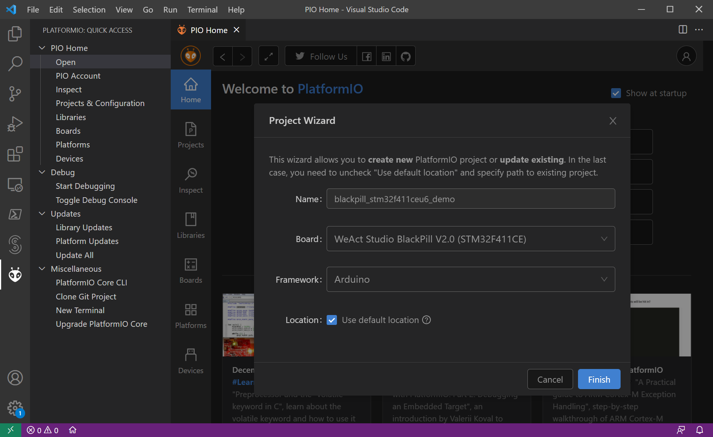
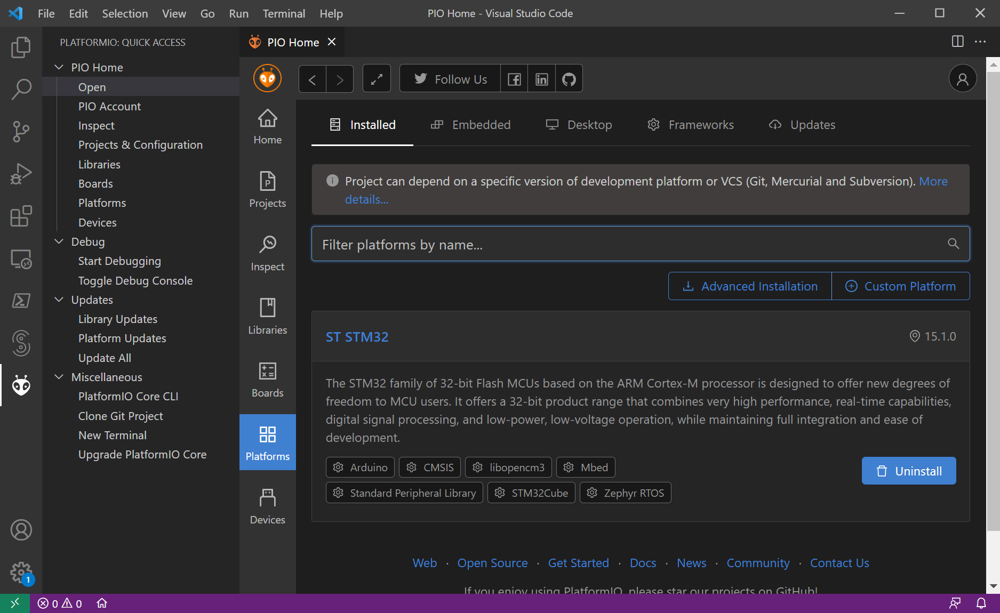
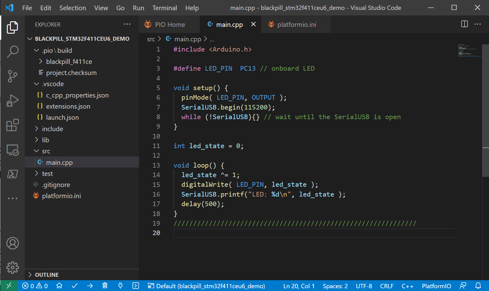
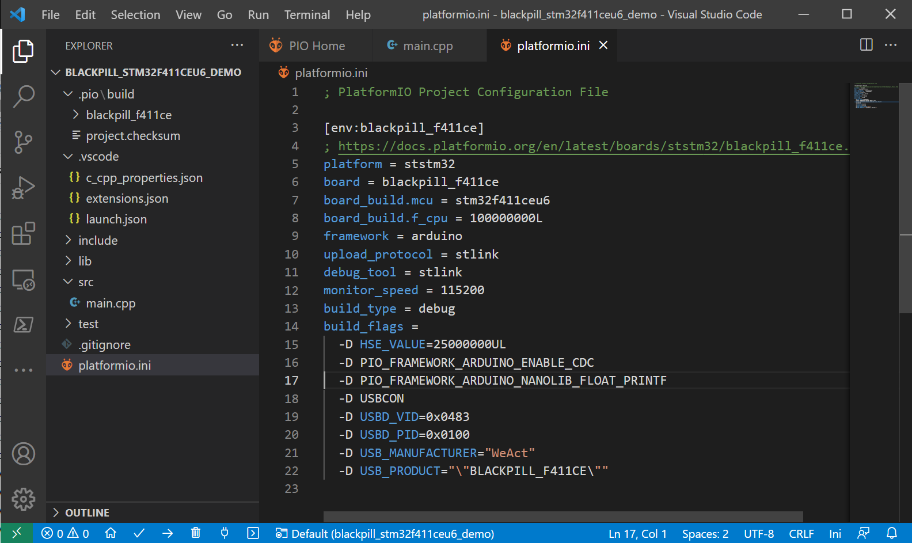
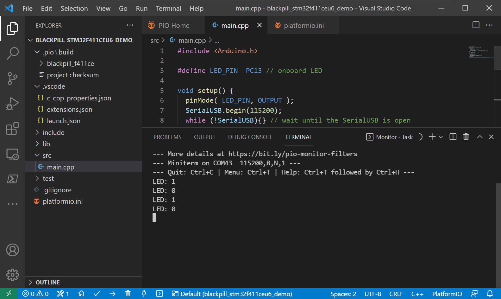
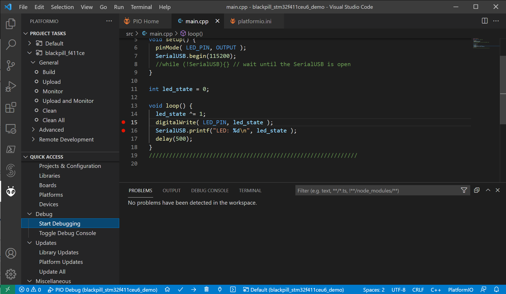
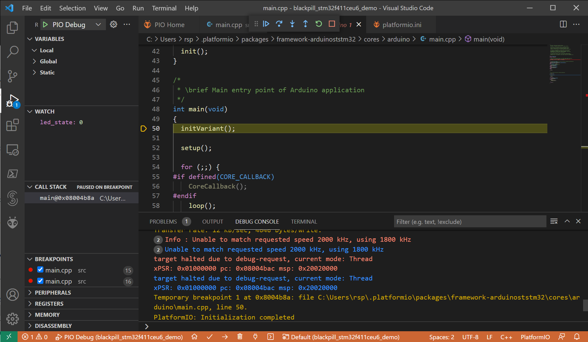
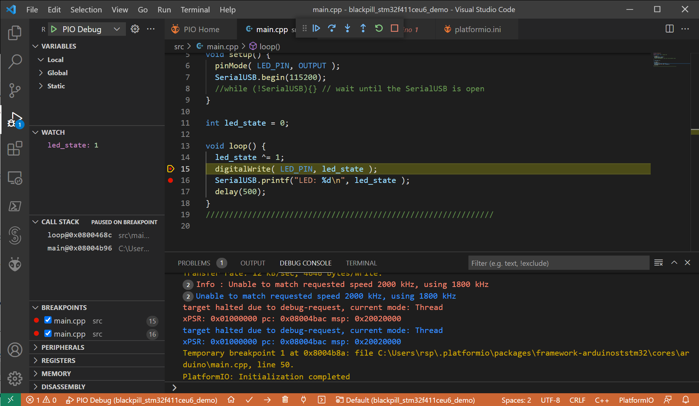
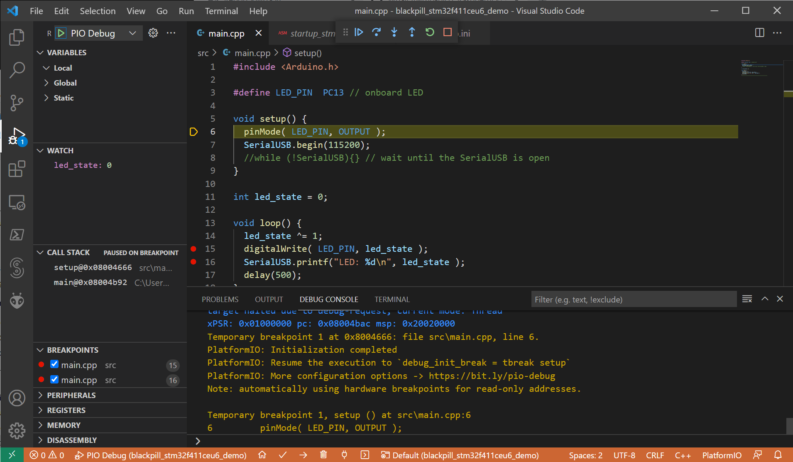

Arduino Programming with STM32 and PlatformIO#
Keywords: VS Code, PlatformIO, PIO, Arduino Sketch, Arduino Programming, STM32
▷ ขั้นตอนการใช้ PIO เพื่อเขียนโปรแกรม Arduino สำหรับ STM32#
โดยปรกติแล้ว หากต้องการเขียนโปรแกรมโดยใช้คำสั่งของ Arduino และเลือกใช้บอร์ดไมโครคอนโทรลเลอร์ที่ใช้ชิป STM32 (ARM Cortex-M Processors) ของบริษัท STMicroelectronics ผู้ใช้สามารถติดตั้ง STM32Duino (Arduino Core for STM32) เพื่อใช้งานร่วมกับซอฟต์แวร์ Arduino IDE
แต่หากว่าต้องการใช้ VS Code IDE ร่วมกับ PIO Extension ก็มีขั้นตอนดังนี้
- เปิดใช้งาน VS Code IDE แล้วไปยัง PIO Home
- สร้างโปรเจกต์ใหม่ด้วยใช้ PIO Project Wizard เลือกใช้ Arduino สำหรับ Framework
และใช้ร่วมกับ Development Platform ที่มีชื่อว่า
ststm32("ST STM32")

รูป: บอร์ด WeAct Studio BlackPill V2.0 + อุปกรณ์ ST-Link/V2 (clone)
ในตัวอย่างนี้ต่อไปนี้ จะเลือกใช้บอร์ด WeAct Studio BlackPill v2.0 (STM32F411CEU6) และสาธิตการเขียนโค้ดเพื่อทำให้
LED ที่อยู่บนบอร์ดกระพริบได้ และเปิดใช้งาน USB CDC เพื่อให้สามารถใช้คำสั่ง printf()
ส่งข้อความมายังคอมพิวเตอร์ได้

รูป: เริ่มต้นทำขั้นตอนเพื่อสร้างโปรเจกต์ใหม่ใน PIO Project Wizard ในตัวอย่างนี้ ได้เลือกใช้บอร์ด WeAct Studio BlackPill v2.0 (STM32F411CEU6)
เมื่อสร้างโปรเจกต์ได้สำเร็จแล้ว ลองตรวจสอบดูว่า มีการติดตั้ง ST STM32 เพิ่มแล้วหรือไม่

รูป: ค้นหาและตรวจสอบรายการ Development Platforms ใน PIO Home (ในรูปตัวอย่างแสดงให้เห็นว่า ได้มีการติดตั้ง ST STM32 แล้ว)

รูป: เขียนโค้ดในไฟล์ main.cpp

รูป: แก้ไขไฟล์ platformio.ini
เมื่อเขียนโค้ดในไฟล์ main.cpp และการตั้งค่าสำหรับ PIO ในไฟล์ platformio.ini
แล้ว ให้ทำขั้นตอน PIO Build เพื่อคอมไพล์โค้ดของโปรเจกต์
จากนั้นทำขั้นตอน PIO Upload เพื่อทดลองใช้กับบอร์ดไมโครคอนโทรลเลอร์

รูป: เปิดรับข้อมูลจากบอร์ดไมโครคอนโทรลเลอร์ โดยทำขั้นตอน PIO Device Monitor
ตัวอย่างการตั้งค่าคอนฟิกและตัวเลือกสำหรับ STM32Duino Configuration ในส่วนที่เกี่ยวข้องกับการเลือกใช้ไลบรารี C/C++ Standard Library Configuration มีดังนี้
PIO_FRAMEWORK_ARDUINO_STANDARD_LIB: ใช้ Standard GCC Embedded C Library / NewlibPIO_FRAMEWORK_ARDUINO_NANOLIB_FLOAT_PRINTF: เลือกใช้ Newlib Nano Library ที่มีขนาดเล็กลง และสามารถใช้ใช้คำสั่งprintf()สำหรับชนิดข้อมูลfloatได้ด้วยPIO_FRAMEWORK_ARDUINO_NANOLIB_FLOAT_SCANF: เลือกใช้ Newlib Nano Library และสามารถใช้คำสั่งscanf()สำหรับfloatได้ด้วย
ถ้าหากใช้ไมโครคอนโทรลเลอร์ที่รองรับการใช้งาน Native USB อย่างเช่น ชิป STM32F4 ก็มีการตั้งค่าใช้งาน USB ที่เกี่ยวข้องดังนี้
PIO_FRAMEWORK_ARDUINO_ENABLE_CDC: CDC (generic Serial supersede U(S)ART)PIO_FRAMEWORK_ARDUINO_ENABLE_CDC_WITHOUT_SERIAL: CDC (no generic Serial)PIO_FRAMEWORK_ARDUINO_ENABLE_HID: HID (keyboard and mouse)
หากต้องการเปิดใช้งาน USB CDC และสามารถใช้คำสั่งของ Arduino โดยใช้คลาส SerialUSB
ในการส่งข้อความได้ (ทำหน้าที่เป็น Generic Serial) เหมือนการใช้ Serial
ในกรณีนี้ จะต้องตั้งค่าการใช้งานให้ได้ถูกต้อง (ดูตัวอย่างไฟล์ platformio.ini ข้างล่าง)
→ ให้เลือกใช้ PIO_FRAMEWORK_ARDUINO_ENABLE_CDC
ตัวอย่างไฟล์ platformio.ini สำหรับโปรเจกต์ (บอร์ด WeAct Studio BlackPill V2.0 - STM32F411CEU6)
- มีการเลือกใช้อุปกรณ์ ST-Link/V2 (
stlink) สำหรับการอัปโหลดโปรแกรมไปยังบอร์ดผ่านทาง SWD (Serial Wire Debug) และใช้สำหรับการดีบักการทำงานของโปรแกรมในฮาร์ดแวร์ได้ด้วย - มีการเลือก Build Type เป็นแบบ
debugเพื่อทำให้โปรแกรมที่ได้สามารถนำไปใช้กับขั้นตอน In-Circuit Debugger ได้
; PlatformIO Project Configuration File
[env:blackpill_f411ce]
; https://docs.platformio.org/en/latest/boards/ststm32/blackpill_f411ce.html
platform = ststm32
board = blackpill_f411ce
board_build.mcu = stm32f411ceu6
board_build.f_cpu = 100000000L
framework = arduino
upload_protocol = stlink
debug_tool = stlink
monitor_speed = 115200
build_type = debug
build_flags =
-D HSE_VALUE=25000000UL
-D PIO_FRAMEWORK_ARDUINO_ENABLE_CDC
-D PIO_FRAMEWORK_ARDUINO_NANOLIB_FLOAT_PRINTF
-D USBCON
-D USBD_VID=0x0483
-D USBD_PID=0x0100
-D USB_MANUFACTURER="WeAct"
-D USB_PRODUCT="\"BLACKPILL_F411CE\""
ตัวอย่างไฟล์ platformio.ini สำหรับโปรเจกต์
(บอร์ด WeAct Studio BlackPill V2.0 - STM32F401CCU6)
[env:blackpill_f401cc]
; https://docs.platformio.org/en/latest/boards/ststm32/blackpill_f401cc.html
platform = ststm32
board = blackpill_f401cc
board_build.mcu = stm32f401ccu6
board_build.f_cpu = 84000000L
framework = arduino
upload_protocol = stlink
monitor_speed = 115200
build_type = debug
debug_tool = stlink
build_flags =
-D HSE_VALUE=25000000
-D PIO_FRAMEWORK_ARDUINO_ENABLE_CDC
-D PIO_FRAMEWORK_ARDUINO_NANOLIB_FLOAT_PRINTF
-D USBCON
-D USBD_VID=0x0483
-D USBD_PID=0x0100
-D USB_MANUFACTURER="WeAct"
-D USB_PRODUCT="\"BLACKPILL_F401CC\""
ตัวอย่างโค้ด main.cpp
#include <Arduino.h>
#define LED_PIN PC13 // use the on-board LED
void setup() {
pinMode( LED_PIN, OUTPUT );
SerialUSB.begin( 115200 );
while ( !SerialUSB ){} // wait until the SerialUSB is open
}
int led_state = 0;
void loop() {
led_state ^= 1; // toggle LED state
digitalWrite( LED_PIN, led_state ); // update LED output
SerialUSB.printf( "LED: %d\n", led_state );
delay( 500 );
}
▷ การทำขั้นตอน In-Circuit Debugging#
จากตัวอย่าง เราได้เลือกใช้บอร์ด STM32F411CEU6 และมีการใช้อุปกรณ์ ST-Link/V2 เชื่อมต่อกันผ่านทางอินเทอร์เฟส SWD (Serial Wire Debug) ถัดไปเราจะมาลองทำขั้นตอนเพื่อดีบักโค้ด โดยให้โปรแกรมทำงานร่วมกับฮาร์ดแวร์
หากดูรูปต่อไปนี้ จากแถบทางซ้ายมือ เลือกจากเมนูคำสั่ง Debug > Start Debugging เพื่อเข้าสู่โหมดการดีบัก (PIO Debug) แต่ก่อนจะเริ่ม ให้เลือกบรรทัดในโค้ด เลือกมากกว่าหนึ่งบรรทัดก็ได้ เพื่อให้เป็นตำแหน่งหยุดชั่วคราวเมื่อรันในดีบักโหมด ตำแหน่งเหล่านี้เรียกว่า Breakpoints เมื่อคลิกเลือกบรรทัดใด จะมีจุดสีแดงปรากฎขึ้นอยู่ข้างหน้า แต่ถ้าคลิกอีกครั้งจะหายไป (ยกเลิกตำแหน่งของ Breakpoint)
ในส่วนของ Watch Windows เราสามารถเลือกตัวแปรในโค้ดของเรา เพื่อดูการเปลี่ยนแปลงค่าในระหว่างที่โปรแกรมทำงานได้
ในรูปตัวอย่าง ให้สังเกตการเปลี่ยนแปลงของตัวแปร led_state ซึ่งเป็นตัวแปรภายนอก (Global Variable)
ข้อสังเกต: ในโหมดดีบัก การทำงานของโปรแกรมอาจไม่ต่อเนื่อง ถูกหยุดด้วย PIO Debugger
เช่น เมื่อเริ่มทำขั้นตอนดีบัก โปรแกรมจะมาหยุดอยู่ที่คำสั่งแรกในฟังก์ชัน main() ของโปรแกรม โดยอัตโนมัติ
(ถือว่าเป็น Initial Breakpoint)
เนื่องจากการตั้งค่าสำหรับ debug_init_break มีค่าเท่ากับ tbreak main (default)
ดังนั้นการทำงานของ USB ของ STM32F4 เพื่อใช้สำหรับ SerialUSB อาจไม่สามารถใช้งานได้ตามปรกติ

รูป: เมนูคำสั่ง Debug > Start Debugging (F5)

รูป: เมื่อเข้าสู่โหมดการดีบัก โปรแกรมจะทำงานมาหยุดที่คำสั่งแรกในฟังก์ชัน main() ของโปรแกรม
หากต้องการรันโค้ดต่อไป ให้กดปุ่ม F5 (Continue Debug) หรือถ้าจะเริ่มการดีบักใหม่อีกครั้ง
ก็ให้กดปุ่ม Ctrl+Shift+F5 (Restart Debug)

รูป: รันโปรแกรมต่อแล้วมาหยุดที่บรรทัดซึ่งมีคำสั่ง digitalWrite() ตามที่ได้เลือกเป็นตำแหน่ง
Breakpoint แต่ถ้าไม่มี Breakpoint ใด ๆ ในโค้ด การทำงานของโปรแกรมก็จะทำงานต่อเนื่องไปตามปรกติ
หากเพิ่มบรรทัด debug_init_break = tbreak setup ในไฟล์ platformio.ini
เมื่อเข้าสู๋โหมดดีบักใหม่อีกครั้ง โปรแกรมจะรันและมาหยุดครั้งแรกที่ถึงฟังก์ชัน setup() ของ Arduino Sketch
โดยอัตโนมัติ

รูป: การทำงานของโปรแกรมในโหมดดีบัก เมื่อหยุดที่คำสั่งแรกของฟังก์ชัน setup()
▷ กล่าวสรุป#
บทความนี้นำเสนอขั้นตอนการใช้งานซอฟต์แวร์ PIO ร่วมกับ VS Code IDE เพื่อการเขียนโค้ดตามรูปแบบของ Arduino และเลือกใช้งานกับบอร์ด Black Pill (STM32F411CEU6) และใช้อุปกรณ์ ST-Link/V2 (clone) สำหรับการอัปโหลดโปรแกรมและดีบักการทำงาน และถือว่าเป็นอีกตัวเลือกหนึ่งทั้งซอฟต์แวร์ที่เป็น Open Source และฮาร์ดแวร์ที่มีราคาไม่แพง (Low-Cost) สำหรับการเรียนรู้ด้านระบบสมองกลฝังตัวและการเขียนโปรแกรมภาษา C/C++ สำหรับไมโครคอนโทรลเลอร์
This work is licensed under a Creative Commons Attribution-ShareAlike 4.0 International License.
Created: 2021-12-23 | Last Updated: 2021-12-25